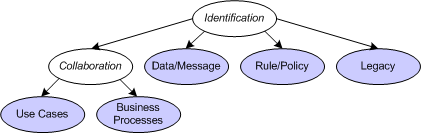

| Операция: Service Identification |
 |
|
| Описание | Структура работы | Распределение групп | Использование рабочего продукта | ||||||
| Родительские операции |
|---|
This section outlines guidance on how the Software Architect or Designer can identify services. This process of service identification and clustering into Service Specifications and Service Providers can be approached from a number of perspectives and the choices below may be used alone or most likely in combination in any particular project. The identification of services is most likely one of the first tasks in the modeling of a service-oriented solution. Therefore, errors made during identification can flow through detailed design and implementation tasks. The following diagram demonstrates the differing approaches to service identification. These are not mutually exclusive, but the choices of which ones are appropriate will need to take into account wider process and project concerns. Each of the colored ovals represents one of the techniques described below. There are two forms of collaboration-based identification where the collaboration may be identified using business-process modeling or use-case modeling.  However, one of the first decisions to make, and it is independent of the approaches above, is whether the identification is purely based on the understanding of Operations which are later aggregation into services or whether a set of services are already known and Operations are added to services as identified. Service-first; this technique is common to both object-oriented and component based development where the Classes of objects or components are identified first, presumably using an analysis technique to identify the classes of "things" in some business or technical domain. Then, as collaborations between objects are analyzed, the operations (responsibilities of the object) are identified and added to the classes. In the same way, Services may be identified from Domain Analysis and augmented by the Operations identified in the approaches below. Operation-first; however, some critics have pointed out that services are not like classes and objects or components. Services may manage a set of resources, but the service/resource relationship is fundamentally different to the class/object relationship. As such, different analysis techniques are required and tend to favor the late identification of services by aggregating a set of identified Operations into some logical grouping. The examples within this activity will demonstrate the use of a Service-first technique because it is more easily used by those familiar with similar guidance in Rational Unified Process (RUP). |
| Управляется событиями | |
|---|---|
| Несколько вхождений | |
| Выполняющийся | |
| Необязательный | |
| Запланированный | |
| Повторяющийся |
© Copyright IBM Corp. 1987, 2006. Все права защищены.. |